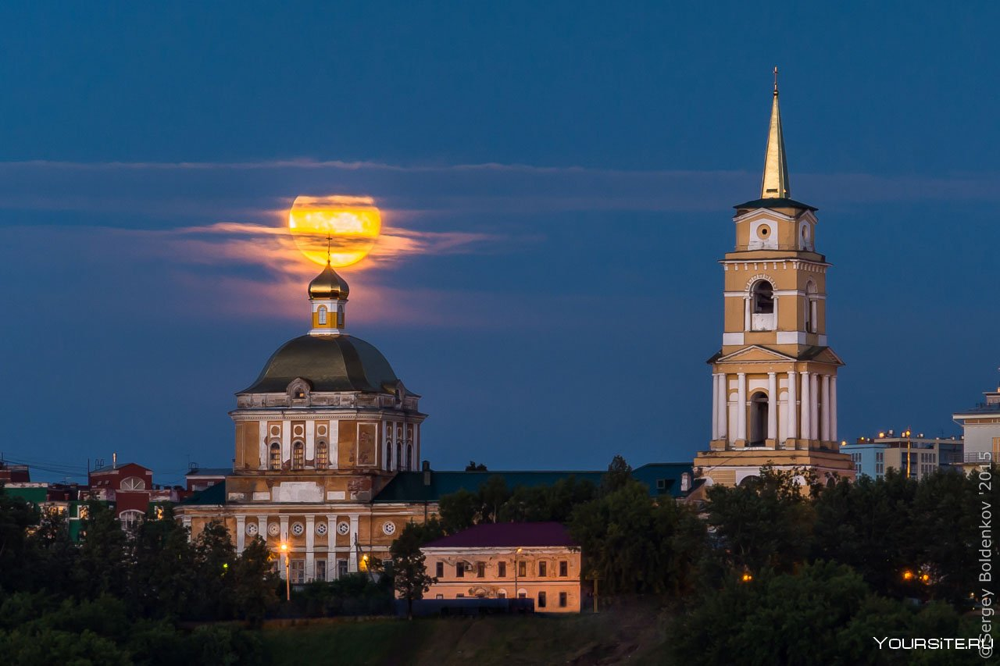
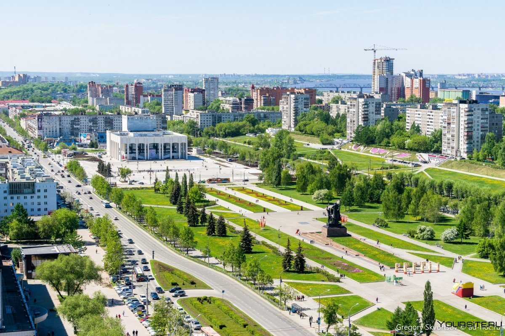
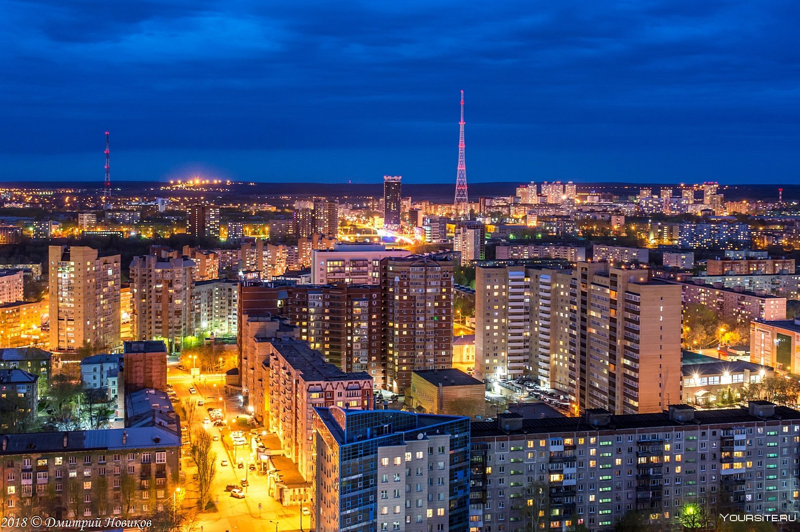

Пермь



Мой любимый город - Пермь!
Почему я люблю пермь? Здесь я родилась, пускай мои корни не отсюда, но тут интересно и весело,иногда грустно из-за автобусов, но не суть. Пермь — город на востоке европейской части России, в Предуралье, на берегах реки Камы, ниже впадения в неё реки Чусовой. Является административным центром Пермского края и Пермского района, транспортным узлом на Транссибирской магистрали, речным портом. Имеет статус города краевого значения и городского округа.